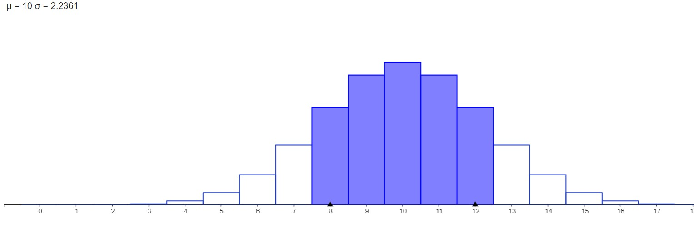
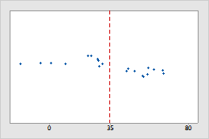
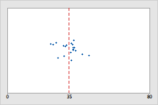
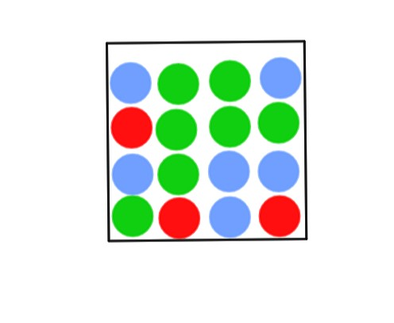
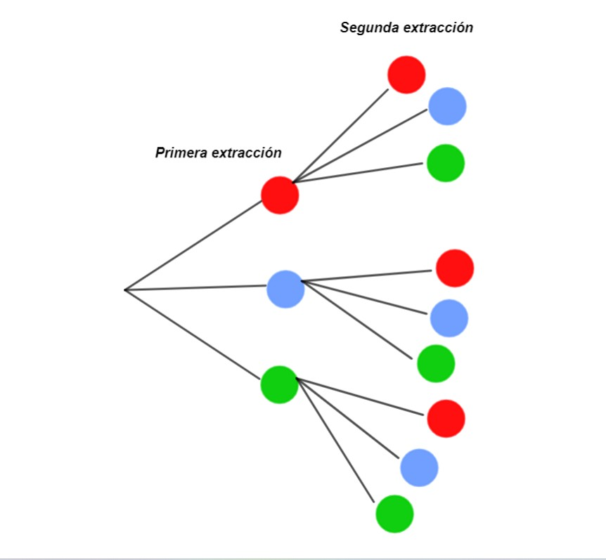
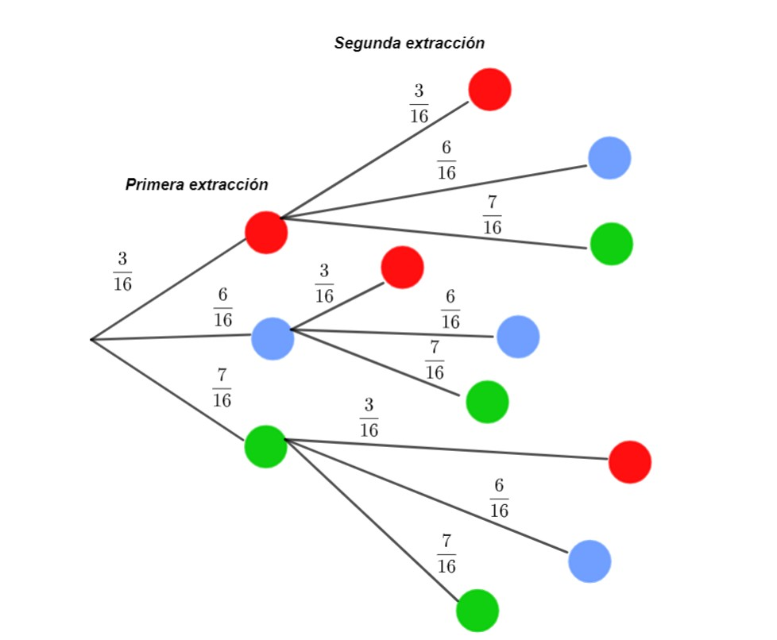
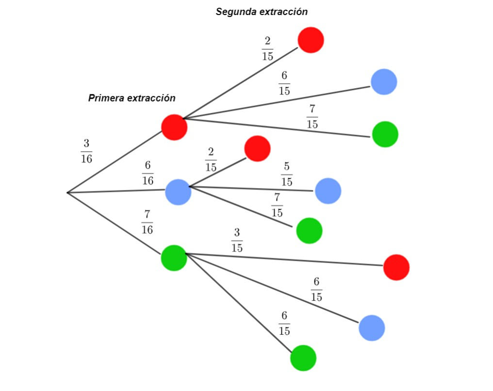

Vamos con la binomial
Varianza y desviación típica
Los parámetros de las distribuciones
Las distribuciones de probabilidad asociadas a las variables aleatorias serán funciones dependientes de unos parámetros. Estos parámetros pueden ser la media, la varianza, la desviación típica, el tamaño de la muestra...
En este caso vamos a definir la varianza y la desviación típica, que van a ser unas medidas que dependerán del valor de la media \( \mu \).

La varianza y la desviación típica
- Sea \( \mu \) la media de una distribución de probabilidad. La varianza de una distribución, denotada por \(\sigma^{2} \), va a ser una medida de la variación, indicando cómo de dispersos están los datos de una distribución alrededor de la media de la distribución \( \mu \). La expresión de la varianza se puede hallar usando que:
\( \sigma^{2} = E[(X - \mu)^{2} ] = E[(X^{2})] - 2 \mu E[X] + \mu^{2} = E[(X^{2})] - \mu^{2} \)
Luego la varianza tendrá por expresión:
\( \boxed{ \sigma^{2}= E[(X^{2})] - \mu^{2} = \sum_{i=1}^{n} x_{i}^{2} p_{i} - \mu^{2}} \)
- La desviación típica se define como: \( \boxed{\sigma = \sqrt{E[(X^{2})] - \mu^{2}} } \).
Medirá el promedio de las desviaciones de los datos con respecto a la media. Sí va a tener las mismas unidades que los datos.
- Datos dispersos con respecto a la media marcada con una línea discontinua roja:

- Gráfico de unos datos concentrados y próximos a su media:

Para obtener la expresión de la varianza hemos usado que \( E[X] = \mu \) y que podemos escribir:
\(E[X \mu] = \mu E[X] = \mu \mu = \mu^{2}\)
y que \( E[(X^{2})] = \sum_{i=1}^{n} x_{i}^{2} p_{i} \), es decir, cada \( x_{i} \) aparece elevado al cuadrado.
Ejemplo
Veamos un ejemplo
Para el juego anterior del dado, podemos calcular la varianza y la desviación típica de la variable aleatoria \( X \) discreta que será la ganancia del jugador o la jugadora. Para ello, debemos hallar lo siguiente:
\( \sigma^{2} = E[X^{2}] - \mu^{2} = \sum_{i=1}^{3} x_{i}^{2}p_{i} - \mu^{2} = x_{1}^{2} \;p_{1} + x_{2}^{2} \;p_{2} + x_{3}^{2}\; p_{3} - \mu^{2} = (-10)^{2} \displaystyle \frac {3} {6} + 5^{2} \displaystyle \frac {2}{6} + 38^{2} \frac {1} {6} - 3^{2} = 290 \).
Es decir, la variarianza será: \( \sigma^{2} = 290 \), lo que nos indica que los posibles valores de la variable aleatoria \( X \), \(x_{1}= -10, x_{2} = 5, x_{3} = 38 \), están muy dispersos con respecto a la media de \( X \) que es \( \mu = 3 \).
La desviación típica será: \( \sigma = \sqrt{ 290} \) = 17.023.
Como comentamos la desviación típica medirá cómo de desviados o dispersos están los valores que toma la variable \( X \) con respecto a la media \( \mu \), en promedio.
Actividad por equipos
Haced grupos de 4 personas y tratad de resolver entre todos este problema. Deberéis dividir el procedimiento matemático que emplearéis en el ejercicio, de manera que cada miembro del equipo se encargue de una parte del problema, de la siguiente manera:
- El jardinero : Uno de los integrantes deberá realizar un diagrama de árbol donde reunirá todos los posibles resultados del experimento, (sin indica la probabilidad de cada suceso) identificando el tipo de variable aleatoria del experimento y el espacio muestral.
- El investigador del remplazamiento: Uno de los integrantes debe investigar cuál será la distribución de probabilidad de la variable aleatoria con la ayuda del jardinero, cuando hay remplazamiento.
- El investigador probabilístico : Uno de los integrantes debe investigar cuál será la distribución de probabilidad de la variable aleatoria con la ayuda del jardinero y el otro investigador cuando no hay remplazamiento de las bolas.
- El parametrista: Otro de los integrantes deberá calcular, gracias a todo el procedimiento seguido por sus compañeros, y con la ayuda de estos, los parámetros de la distribución, cuando hay remplazamiento y cuando no lo hay.
Supongamos que tenemos una urna con 3 bolas Rojas, 6 azules y 7 verdes.

Si uno de vosotros saca dos bolas al azar de la urna con remplazamiento, y anotamos el número de bolas rojas que se extraen, ¿cuál será la distribución de probabilidad? ¿Y los parámetros de la distribución?.¿Y si no hubiera remplazamiento?.
El jardinero:
Debe distinguir todos los posibles casos que podemos obtener:

Debe indicar que no importa para el caso en el que haya una bola roja si esta se extrae en la primera o la segunda extracción. Y en el caso en que no se extraiga ninguna bola roja no importa si la primera o la segunda es azul o verde. Consideramos la variable aleatoria \( X \) que mide el número de bolas rojas que hay en las dos extracciones. Es variable aleatoria es discreta, pues toma un número finito de valores. Si denotamos los sucesos R sale una bola roja, por A sale una bola azul y por V cuando sale a una bola verde, el espacio muestral será:
\( \Omega = \{AA,AR,AV,RA,RV,RR,VA,VV,VR \} \)
Veamos cómo podemos resolver el problema con remplazamiento y sin remplazamiento.
CON REMPLAZAMIENTO
El investigador con remplazamiento debe obtener la distribución de probabilidad de \( X \), para lo que un diagrama de árbol con las probabilidades asociadas puede ser de ayuda:

Si por ejemplo:
- Hay 0 bolas rojas en las dos extracciones : Se sacan dos bolas del siguiente tipo:
AA o VV o AV o VA que es equivalente a decir NR NR
donde NR no sale una bola roja . Luego tenemos, por ejemplo que:
\(P (X = 0) = P(AA) + P(VV) + P(AV) + P(VA) = \displaystyle \frac {6}{16} \displaystyle \frac {6}{16} + \displaystyle \frac {7}{16}\displaystyle \frac {7}{16} + \displaystyle \frac {6}{16}\displaystyle \frac {7}{16} + \displaystyle \frac {6}{16} \displaystyle \frac {7}{16} = \displaystyle \frac {169}{16} = P(NR) = \displaystyle \frac {13}{16} \displaystyle \frac {13}{16} \)
El investigador probabilístico deberá razonar de manera similar pero teniendo en cuenta el siguiente diagrama de árbol, donde aparece el no remplazamiento de las bolas

El parametrista ya tiene todos los ingredientes para calcular la esperanza, la varianza y la desviación típica. Dispone de los elementos \( x_{1} = 0, x_{2} =1, x_{3} = 2 \) y de las probabilidades \(p_{i} \) con \(i = 1,2,3 \) para el caso de remplazamiento y no remplazamiento. Para calcular la varianza y desviación típica debe proceder de forma análoga a como hicimos en el ejemplo anterior.
Pregunta de Elección Múltiple
Solución
Solución
Solución
Solución
Solución
Solución
Obra publicada con Licencia Creative Commons Reconocimiento Compartir igual 4.0